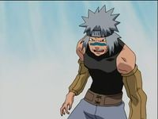

Villano
 De: La Frikipedia, la enciclopedia extremadamente seria.
De: La Frikipedia, la enciclopedia extremadamente seria.

|
ATENCIÓN
Este artículo es un truño, es sólo un esbozo de un artículo o es demasiado corto o el que lo ha escrito se cree que esto es un vil diccionario. Su autor puede estar bajo los efectos del alcohol o ser un inútil. Quizá haya pistas en la discusión. ¡Mejora la Frikipedia ampliando y mejorando el artículo!
|
- Villano: ETIMOL. Del latín: mecagosentus 1. Dicese de una persona malvada con ganas de
fastidiar de no alegrarte la mañana exactamente. 2. Persona que vive de villano en una villa (logíco,¿no?) y tiene tendencias de ser muy garrulo.
Origen
No se sabe muy bien cuando salieron, pero seguro que existen desde el big bang; hasta Diox tiene un enemigo llamado el diablo. Pero si analizamos personajes que tienen estas cualidades maquinaciones mentales, se pueden seleccionar en varios grupos. Todos sabemos que es un villano espera, ¿por que buscas esto si lo sabes? y la naturaleza es mala obviamente, algunos son mas cabroncetes malignos que otros y algunos simplemente pierden de la forma más tonta, como Dofensmir el de Phineas y Ferb.
Historia
No se sabe bien como cojones salieron estos individuos de mierda. Algo que si se sabe es que por lo visto, se reproducen por personas esporas y tambien por el metodo que sabes (sí el tradicional), cada vez son más y más y más. Los que nacieron hace un huevo, tienen la experiencia de saber que: "mala hierba nunca muere, NUNCA, ¿¡POR QUÉ!?"
Por naturaleza es mala como mencioné, y algunos tienen una mirada de loco que cuando les miras, se te queman los ojos.
y ahora date cuenta de lo gilipollas que eres... Ui que malvado soy, muajajaja
Personajes famosos que tienen enemigos/villanos
- Queveo y Congorra.
- Hulk y La Cosa.
- Tu padre y su suegra.
- Tú y el que se sienta enfrente de ti y no te cae bien.
- Nadie y nada.
- El jin y el jan.
- Magikarp y Pikachu.
- Habbo y holo.
- Batman y el Jocker.
- Chinos y Japoneses.
- Lobezno y su médico
eso si que es bueno, XD
- Magneto y la madera
hoy me salgo de mis limites, jejeje.
- El sol y la luna.
- Y supongo que más cosas.
 Se puede apreciar su mirada malvada y llena de odio
Planes secretos que tienen los villanos (por lo general)
- Cagarse en tu madre.
- Insultarte (claro).
- Conquistar el mundo.
- Matarte.
- Humillarte.
- Introducir un idioma extinguido que solo conoce el hombre de negro.
- Marcarse un tango de puta madre.
- Decir: El
gilipollas estado soy yo.
- Juntar un maquipájaro con un corniconejo y despues ordenar que secuestren a tu madre. Como nadie, irá a rescatarla ni pagar el caro rescate, la matarán e intentaran jaquear tu facebook para que no puedas hablar con nadie; te pincharán el teléfono, te dejarán sin tele y caerás en una depresión profunda. Finalmente te meterán en un santanatorio o manicomio y te morirás por un golpe en la cabeza al estrellarte con el parabrisas de una moto (sí, ya me diras como) y después, morirás de locura y desangrado.
Formas de erradicar el problema
Para empezar, he de decir que estos métodos no estan homologados, osea que cuidadín con el bisturí.
- Puedes intentar matarlos, pero es muy complicado.
- Se podría intentar meterlos en la carcel a todos.
Pros: buena idea.
Contras: pero en chirona no hay tanto sitio.
- Podrías convencerles de que se conviertan en buenos...
... aunque parece lo mas difícil.
- Contrata a un asesino a sueldo o a un gorila para que los mate.
Pros: Sería un espectáculo.
Contras: Te saldrá caro.
- Pon una bomba en su guarida secreta.
Pros: Bien, como mola!
Contras: ¿Sabes activar una bomba? ¿Sabes donde se compra una?
Veasé también
Autor(es):
- Fordus
- Frikisexigirl!!!
- Likan003
- Escribir
Frikipedia 2005-2016, Licencia
GFDL 1.2 - Extraído por FrikiLeaks